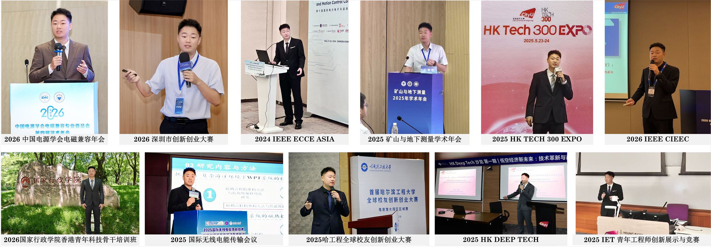

Postdoctoral Fellow
Electrical Engineering, City University of Hong Kong, Hong Kong, China
City University of Hong Kong | Postdoctoral Fellow
张犇 博士 · 香港城市大学
Postdoctoral Fellow in Electrical Engineering, City University of Hong Kong
Member, State Key Laboratory of Terahertz and Millimeter Waves
Dr. Zhang’s research focuses on wireless power transfer (WPT) and power electronics technologies for autonomous systems and electric transportation. His work emphasizes high-power-density and misalignment-tolerant magnetic couplers, multiphysics modeling and optimization, and high-efficiency, high-stability control. He has led and participated in a range of national, military, and industry-funded research projects involving wireless power transfer, autonomous energy replenishment, and underwater charging systems.
Dr. Zhang has received several international academic and innovation awards, including the Gold Medal at the 2025 International Exhibition of Inventions of Geneva, the Best Paper Awards at ICWPT 2025 and IEEE CIEEC 2026, and the 2025 IET YPEC Champion Award. He currently serves as an Associate Editor of the International Journal of Circuit Theory and Applications and Wireless Power Transfer, and as a Guest Editor of Electronics. He has also served as a Session Chair for multiple international conferences in wireless power transfer, electrical engineering, and energy systems.
张犇，香港城市大学电机工程系博士后研究员、太赫兹及毫米波全国重点实验室成员，主要从事面向自主无人系统与电动交通应用的无线电能传输及电力电子技术研究。主持或参与国家重点研发计划、军队重点项目及香港研究资助局合作研究基金等科研项目10余项，发表SCI/EI论文40余篇，获授权发明专利及软件著作权10余项。曾获日内瓦国际发明展金奖、无线电能传输国际会议最佳论文奖、IEEE国际电气与能源大会最佳论文奖及IET青年工程师创新展示与竞赛冠军等国际学术与科技创新荣誉10余项。现任《International Journal of Circuit Theory and Applications》和《Wireless Power Transfer》副主编、《Electronics》客座编辑、中国电源学会第九届磁技术专业委员会委员，并多次担任无线电能传输、电气工程及能源系统领域国际会议分会主席和技术委员会委员。
Academic Appointments
Electrical Engineering, City University of Hong Kong, Hong Kong, China
Electrical Engineering, City University of Hong Kong, Hong Kong, China
Education Background
Electrical Engineering, City University of Hong Kong
Power Engineering and Engineering Thermophysics, Harbin Engineering University
Research Direction
Design of lightweight, reconfigurable, and posture-tolerant magnetic coupling structures for AUV and UAV wireless charging.
Closed-loop electromagnetic, thermal, and mechanical co-design for compact high-power-density WPT systems.
High-efficiency, high-stability control strategies for contactless energy replenishment in complex operating environments.
Projects
Low-Altitude Economy as a New Engine: High-Efficiency and Lightweight Wireless Charging System for Unmanned Aerial Vehicles.
Developed adaptive WPT technologies based on flexible magnetic couplers, enabling high-efficiency and high-misalignment-tolerant contactless charging under complex operational environments.
Institute General Project: Key Technologies and Applications of Wireless Energy Replenishment for Autonomous Underwater Vehicles Oriented to Marine Renewable Energy.
Led research on AUV wireless energy replenishment in complex marine environments, integrating efficient magnetic coupling, multiphysics modeling, and robust control.
Adaptive Wireless Power Supply Technologies for Long-Endurance Autonomous Vehicle Networks.
Developed adaptive WPT technologies based on flexible magnetic couplers for reliable, scalable, high-efficiency contactless charging.
System Architecture and Key Technologies for Power Supply of Underwater Autonomous Platforms.
Contributed to a three-dimensional energy supply framework combining fixed energy nodes and mobile charging platforms.
Electrification and Decarbonization: Multi-Port Wireless Dock and Charge for Waterborne Transportation.
Worked on system architecture, multi-energy-flow coordinated control, and high-reliability underwater magnetic coupling for simultaneous vessel charging.
Multimodal Electromagnetic Field Propagation in Layered Nonlinear Marine Media and Intelligent Computational Methods.
Investigated multimodal excitation and propagation mechanisms of electromagnetic fields in layered nonlinear oceanic media.
General Technical Specifications for Magnetically Coupled Wireless Power Transfer Systems.
Contributed to technical requirements and testing methodologies for system interfaces, performance metrics, safety, and compatibility.
Universal Wireless Power Transfer Technologies for Unmanned Aerial Vehicles.
Developed standardized magnetic coupling interfaces and communication protocols compatible with multiple UAV platforms.
Research Outputs
Honors
Academic Service
Media

Contact
张犇 · 香港城市大学